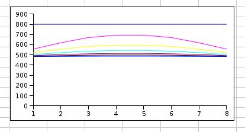
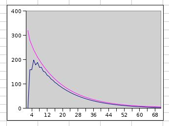
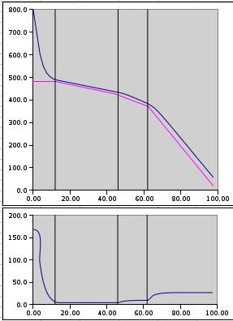

Miten lasi jäähtyy
Haudutusvaihe
Lasi, kuten muutkin aineet laajenee lämmetessään ja kutistuu takaisin jäähtyessään.
Jos lasi saa jäähtyä liian nopeasti, pinta ehtii kovettua joustamattomaksi
ja kuuma ydin kutistuu edelleen.
Tämä aiheuttaa lasiin jännityksen joka poksauttaa lasin rikki.
Siksi jäähdytys tehdään hidastetusti eri vaiheita seuraten.
Haudutusvaiheessa lasin notkeus vähenee,
mutta se on kyllin joustavaa sopeutumaan tilavuuden muutoksiin.
Kun uuni saa jäähtyä työlämpötilasta, lasin jäähtyminen jää jälkeen.
Lasi voi jäähtyä vain ulkopinnaltaan, siksi lasin ydin pysyy kuumempana kuin pinta.
Historiallisita syistä jäähdytystaulukot tehdään olettaen kaksipuolinen jäähdytys,
siis lasi saa jäähtyä kummaltakin pinnaltaan. McLellan ja Shag julkaisivat 1984
Glass engineering Handbookissa taulukot eri paksuuksille. Heillä oli mielessään kuva
lasin puhalluksesta, jossa ei ole muotteja tai uunilevyjä häiritsemässä.
Kaikki näkemäni jäähdytystaulukot on tehty tämän mallin mukaan.
Siksi seuraan sitä tässäkin. Toispuolinen jäähdytys käsitellään jäljempänä..
 Kuva 1. Lasin jäähtyminen
Kuvan vaakaakselina on lasin paksuus ja pystyakselina lämpötila.
Kuvassa 1 on poikkileikkaus lasista haudutuksen aikana, kun uuni on jäähtynyt
800 C työlämmöstä 482 haudutuslämpöön. ( 482 C on Bullseyen uusi suositus)
Käyrät kuvaavat lämpötilan laskua tasaisin välein.
Pinnat jäähtyvät nopeasti uunin ilman lämpöön, mutta ydin jää jälkeen.
Lasi on huono lämmönjohde ja kestää aikansa ennenkuin lämpö siirtyy pintaan ja siitä ilmaan.
Alimmat lämpökäyrär ovat hyvin lähellä toisiaan.
Lämpö virtaa hitaammin kun "alamäki" loivenee.
Seuraavassa kuvassa sama asia ilmaistu toisella tavalla.
 Kuva 2. Lämmön poistuminen
Kuvan vaaka-akselina on haudutusaika ja pystyakselina lämpötila.
Ylempi lila käyrä kuvaa lasissa olevan lämpömäärän poistumista.
Helposti syntyy mielikuva että haudutus on staattinen tila.
Käyrä osoittaa että siinä tapahtuu suuria lämpötilan muutoksia.
Noin kolmannes lasiin syntyneestä lämpövarauksesta purkautuu haudutuksen aikana.
Alempi sininen käyrä kuvaa pinnan ja ytimen lämpötilan eroa.
Se kasvaa aluksi kun pinta jäähtyy. Sitten lämpöero pienenee tasaisesti kun
jäähtyminen etenee ytimeen saakka ja pinta pysyy haudutuslämmössä.
haudutus päättyy kun tämä lämpöero on pienempi kuin 5 C.
Epäsymmetrinen jäähdytys
Uunityössä lasi on useimmiten muotissa tai uunilevyn päällä.
Se ei jäähdy kaksipuolisesti niinkuin taulukot edellyttävät.
Uunilevy johtaa lämpöä huonommin kuin lasi. Se muodostaa toiselle puolelle
eristävän kerroksen joka hidastaa jäähtymistä.
Lasi jäähtyy yhdeltä puolelta nopeammin kuin toiselta.
Sen takia hitaimmin jäähtyvä kohta ei olekaan lasin keskellä vaan lähempänä
uunilevyä tai muotin pintaa. Matka joka lämmön on kuljettava pitenee.
Ohuen 3-9 mm lasin tapauksessa kuumin piste jää uunilevyn puolelle.
Uunilevy pystyy luovuttamaan lämpöä hitaammin kuin lasi sitä kuljettaa.
Lämön on siis kuljettava koko lasin paksuuden läpi eikä vain keskeltä
pintaan kuten kaksipuolisessa jäähdytyksess. Siksi ohjeena on että
jäähdytysohjelma valitaan kaksinkertaisen lasin paksuuden mukaan.
Paksun lasin tapauksessa kuumin piste jää lasin puolelle.
Toisella puolella jäähtymistä hidastaa uunilevy.
Teoreettisesti ei tarvitsisi jäähdyttää aivan kaksinkertaisen paksuuden mukaan,
mutta käytännössä se on turvallisinta.
Paksuuden vaikutus
Jos otetaan kaksi kertaa paksumpi lasi,
pitenee lämmön kuljettava matka kasinkertaiseksi.
Samalla loivenee myös "alamäki" puoleen ja lämpö liikkuu puolta hitaammin.
Kokonaisvaikutus on että ajat pitenevät melkein nelinkertaisiksi.
Ohuilla laseilla tämä peityy kuitenkin uunilevyn jäähdytykseen tarvitsemaan aikaan.
Jäähdytystaulukoissa haudutusaika pitenee kuitekin vain kaksinkertaiseksi.
Selitystä asialle en tunne. Itse haudutan pitempään.
Jähmettymisvaihe
Haudutusvaiheessa lasi on luovuttanut nopeasti suuren lämpömäärän
kunnes lopuksi se on asettunut tasapainoon.
Lämpöeroa lasin sisällä ei pitäisi olla yli 5 C.
Siitä alaspäin seuraa hidastetun jäähdytyksen jakso, jossa ylläpidetään tuota max 5 C eroa kunnes
koko lasimassa on jähmettynyt kiinteäksi. Jakson lopussa ( 2. jäähdytys) lasi kestää
jo 10 C lämpöeron ilman että se enää muodostaa jännityksiä.
Tämän vaiheen jälkeen lasi on jo kiinteätä mutta liian kuumaa.
.
Valitettavasti ei ole mitään tapaa käytännössä mitata lasin sisäisiä lämpötiloja.
Siksi on luotettava taulukoihin, jotka perustuvat pitkiin koesarjoihin.
Loppujäähdytys
Kun muutosalueesta on selvitty, on jännityksen poisto ohi. Lasi on vielä kuumaa
ja siksi hidasta jäähdytystä on jatkettava niin ettei lämpöshokki halkaise lasia.
Seuraavassa kuvassa on graafisesti koko jäähdytystapahtuma. Ylempi kuva näyttää lasin ytimen lämpötilan prosessin aikana.
Kulmikas violetti viiva on Bullseyen taulukon mukainen ohjelma.
Haudutusjaksossa lasin lämpötila laskee lähelle uunin lämpötilaa.
1. jäähdytyksessä lasin ydin pysyy max 5 C kuumenpana kuin uuni.
Toisen jakson aikana ero kasvaa 10 C asteeseen.
Loppujäähdytyksessä lasin jäähtyminen saa jäädä 30 C jälkeen uunin lämmöstä.
Kun uuni on saavuttanut huoneenlämmön, lasi voi siis olla vielä n.50 C sisältä.
Se voi saada lämpöshokin jos se lasketaan kylmälle alustalle.
Itse suojaan lasin usin sanomalehtien väliin uunista ottamisen jälkeen.
Todella paksujen lasien pitää saada "rauhoittua huoneenlämmössä" vuorokausi ennenkuin
niitä uskaltaa pestä tai muuten käsitellä.
 Kuva 3. Jäähtymiskäyrät
Alempi käyrä kuvaa pinnan ja ytimen lämpöeroa samana aikana.
Haudutuksessa pinta jäähtyy nopeastija asettuu ilman lämpötilaan.
Pienellä viiveellä alkaa ytimen jäähtyminen ja lämpöero pienenee.
1. jäähdytyksen aikana ero pidetään 5 C ja toisen aikana se hitaasti nousee 10 C asti.
Loppujäähdtyksessä annetaan eron kasvaa 30 C asti.